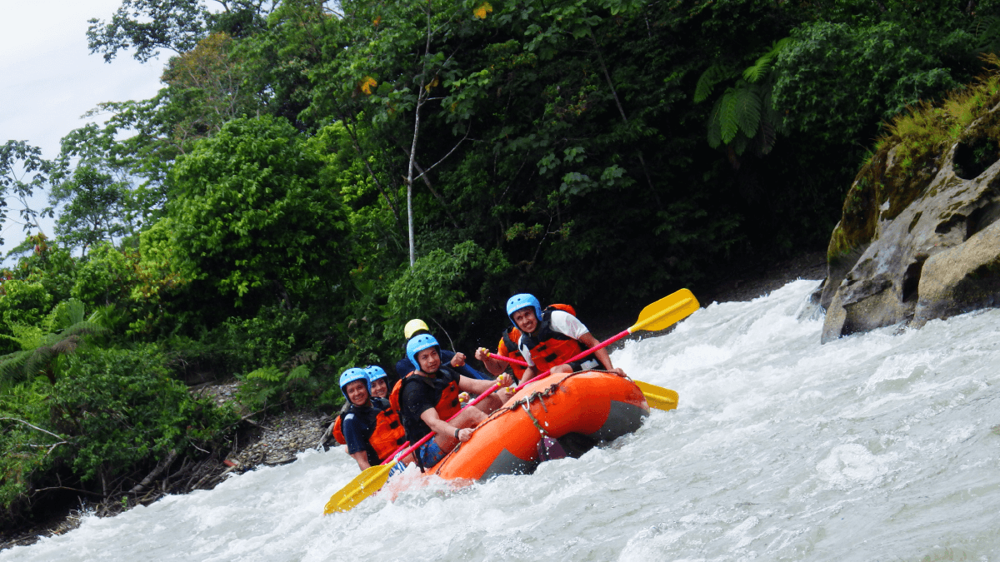

An exceptional river, which you can join it with us.
Our agency is dedicated to assure that you may obtain a great
and unforgetable adventure in the river, if you are looking for
spend time with your family or friends we can help you
Itinerary
Rafting, Pastaza River Class III - III +
Start: 9 a.m.
End: 2:30 p.m.
Season: all year
Locations: Starts in La Penal and ends near Cumandá

Palora River, rafting in brave waters, located 3 hours at sout of Baños in Sangay National Park, is a exceptiona option to make rafting in the tropical forest
Rafting Palora River Class III -IV
Itinerary
Start: 9 a.m.
End: 2:30 p.m.
Season: all year
Locations: Starts in Banos and ends near Macas city
Season: all year